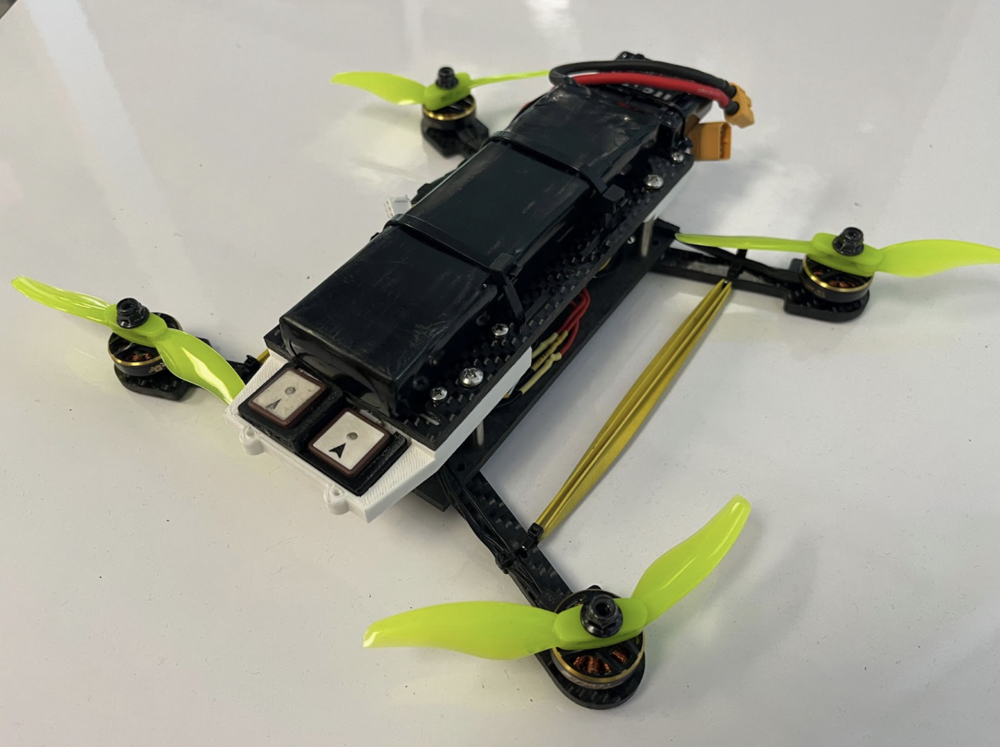
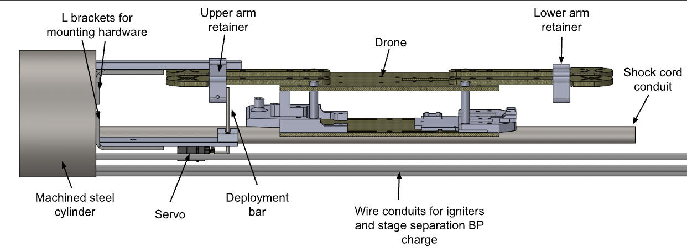

Generic

Icarus and Dædalus were Rice Eclipse's entry into the 2023 Spaceport America Cup 30 thousand feet division. I&D was a two-stage rocket, which was designed to deploy a quadcopter drone, Pigeon, while recovering under parachutes. Pigeon would then recover from free-fall and take geo-tagged images to create a large rasterized map of the ground. I designed a significant portion of the drone's electronics, integration with the mechanical frame of Pigeon, and the integration with the rocket and electrical deployment system.
I was responsible for a lot of the integration of electrical components and the carbon fiber frame of the quadcopter, which involved 3d printing and modeling various components, as well as making wiring diagrams and making sure all of the components worked in the final configuration.
Additionally, I ended up designing much of the deployment system, which consisted of an Arduino Nano connected to a servo motor, which moved a pin when signalled by a commercial rocket flight controller to release the drone's retaining brackets and deploy the quadcopter.
Ultimately, the quadcopter was unable to fly due to last-minute drone regulations added during the competition, but it was succesfully tested to deploy and recover from free-fall to stable flight.